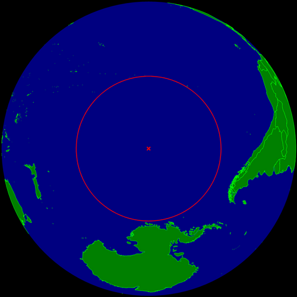

포인트 니모(Point Nemo; 포인트 니모)는 도달불능점 가운데 해양 도달불능점(The oceanic pole of inaccessibility)을 가리키는 용어로, 지구상의 어떤 땅에서도 제일 먼 바다 위의 지점이다. 네모(니모)라는 이름은 라틴어로 '아무도 없다.'는 뜻인 네모(Nemo)에서 왔으며, 쥘 베른의 《해저 2만리》와 《신비의 섬》의 주인공인 네모 선장에서 가져온 것이다. 
예전부터 지구상에서 가장 벽진 곳으로 꼽혀 각국 우주센터에서 수명이 다한 위성을 폐기하는 일명 '무덤 궤도(Graveyard orbit)'로 써 왔으며, 1992년 크로아티아의 과학자 흐르보예 루카텔라(Hrvoje Lukatela)가 프로그램을 통해 밝히면서 유명해졌다. 사실 이 곳이 지리적으로는 의미가 있지만 해당 수역 자체는 과학적으로나 관광지로서 큰 가치 없는 곳이라 대중적으로 알려진 것도 얼마 되지 않았고, 망망대해의 한복판이라는 점 때문에 다른 도달불능점에 비해 탐험하고자 하는 사람도 거의 없는 편이다.